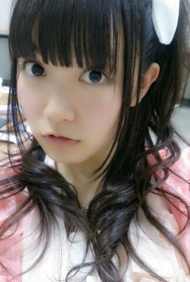
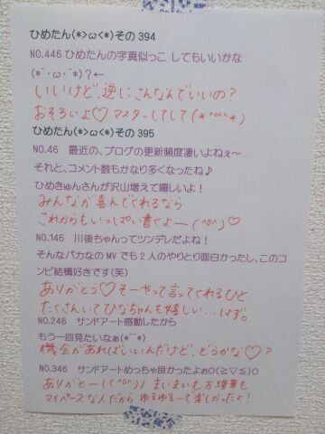

| 2014/04 26 Sat | ひめたん-OoO-その438 |

ふたりでパーティで
踊ってそうだわーんふふふ
今週日曜 乃木のの当番です(＾ω＾)
川後、秋元、中元の3人です
イタいーズってゆユニット名がつきました
イタい？何のことかにゃ
いろいろお話してきたので
聴いてくれたら嬉しいなーと思います
オンエアが聴ける地域に住んでらっしゃる方は
20:30 ですよろしくです
bayfm公開生放送
ユアエルム presents with you SPRING FESTIVAL
に出演します！
4月29日(祝・火)ですよー
詳しいことはbayfm公式ホームページまたは
乃木坂46公式サイトまで☆
東スポさん連載の
昭和にアメイジング
ひめたんの番がまわってきました( ^O^ )
チェックしてみてくださいね
よろしくね♪♪
そして乃木どこ収録してきました！
オンエア楽しみに待っててくださーいねー
※どあっぷ注意※

そうそうアンダーライブ！
名古屋の2次募集受付がスタートしたそうですね
来てほしいなーひめたん来てほしいなー
東京のアンダーライブのリハ
スタートしてるけど
うん、ステキなライブになりそうです(＊^^＊)
お楽しみにー♪

 ねーねーいけぼひめは
ねーねーいけぼひめは
愛読書とかないんですか？ちなみに僕の愛読ry
え！く！ぼ！
なに？そこで吃られたら
まったく伝わってこないんだけど(笑)
ひめたん推しの僕の友達が
大学退学するかもとか
超ネガティブ発言してるんですよ。
軽いノリでも良いんで
そいつにエール送ってくれへん？
その選択自体が正解かどうかは
きっと個人のあれだから
絶対辞めないで！とは言えないけど
後悔のないような選択をしてほしいなー
夢があるなら前向きな一歩かなと思う
成績足りないんならお菓子送りなさい。
ひめたんは犬派ですか？猫派ですか？
それとも私派ですか？
犬派です( ´ ▽ ` )
って言ったらどーすんの？んふふ
ひめたんって普段何で移動してるの？
馬車？兎車？鳥車？
みんなの夢を壊すようなことは
できないなーひめたん......
え逆になんだと思う？
ただうさぎさんに車引かせることは
さすがにしませんよ？
 ひめたんは、学校のテスト返却で
ひめたんは、学校のテスト返却で
点数が見えないように角を折るタイプ？
それとも四葉のクローバーを
三つ葉にしちゃうタイプ？
テストの隅っこを折るってやつ
非常に共感できる！共感できすぎるよー！
四つ葉のクローバーは四つ葉のクローバーです
そんな悲しいイタズラ(´-ω-`)やめて
ひめたん質問返し多いけど、
過去と同じような質問とかでも
返してくれるのかな？
過去と同じ質問の場合、
答えが当時と変わってないなーって思うものには
返していないことが多いです。
逆に自分の中で変化のあったものには答えるかな。
なかなか拾ってくれないよひめたんーって人は
もしかしたら過去に答えてるかも......
ひめたんはスカートばっかな気がするけど
ズボンとかも(頭に)履くの？
ばーかばーかばーかばーか
ボクがもしMステに出るとなれば
入場のとき階段の上から
おもいっきり飛び降りたいと思います。
こんなボクはタモリさんに怒られますか？
危ないからやめて（ ; ; ）
危ないから、いろいろと、危ない......
おす！(^0^)/ひめたん。
ツインテールをトリプルにしたらどうなるぅ？
最強ぉ？
お魚くわえたドラ猫追っかけて
裸足で駆けてく陽気なあのひとになるんだと思う。
あのあのっ！
まーえーから気になっていたんだけど
乃木坂メンバーがよく前髪につけてる
あのクリップみたいなのは何？！？！
よかったら教えて
羽根ピンと呼んでおります！
例えばメイクしたりするときに
前髪がじゃまだからピンとかで留めておきたいなー
なーんて思うときに使ったりしますよ＊＊
トレカ買うよ。
ひめたんでるかなー（*^ ^*）←揺れながら
かわいい、ものすごくかわいい
←揺れながら って何それかわいいよ
あたしの中でブームになりそう。使おーっと
ひめたんはアンパンマンの
キャラクターの中で何が好き?
ロールパンナちゃん(＊^^＊)←揺れながら
ひめたんの日記の
コメント欄下２ケタに46を踏んだ方へ
手書きでコメ返するコーナー
＼ ひめたん46 ／

いつもコメントたくさん
ありがとうございます
握手会の感想、お洋服の感想が多かったかな？
ハーフツインがやっぱり好評だったので
とうとうプライベートでもハーフツインしたったよ
あすかりんにびっくりされました(゜゜)
それから、みなさんのいくちゃん愛に
読んでてほっこりしました。
最後に プレゼント受け取りました！
ひめたんのこと考えて選んでくれたのかなーって
気持ちがもう嬉しくて嬉しくて。
ありがとう大切にします＊
(＊´・ω・＊)
コメント(515)
2014/04/26 00:30